메인콘텐츠
지금 청주 공예 비엔날레는?
공예를 통해 반짝반짝 빛나는 세상
-
5.18 민주화운동 베니스 특별전
2022. 4. 20 ~ 2022. 11. 275.18 민주화운동의 아픔을 치유하고 앞으로 내딛고자 하는 미래 지향적인 담론에 집중하여 시각화하였다.
예술감독심억수, 안은호, 어일선, 조송주, 조용주, 조혜영
자세히 보기add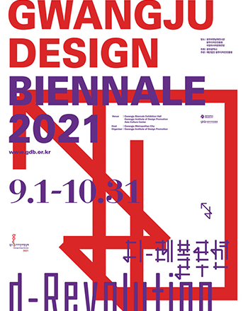
-
2021 국제공모전대상작가 초대전
2022. 4. 20 ~ 2022. 11. 27동화 속 이야기처럼 각각의 작품 캐릭터를 통해 자아에 대한 한 편의 이야기를 들려줍니다.
예술감독심억수, 안은호, 어일선, 조송주, 조용주, 조혜영
자세히 보기add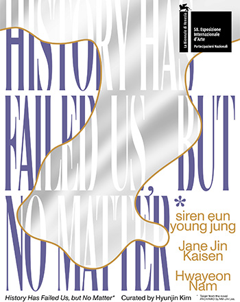
-
코발트 블루 : 조선후기 문방풍경
2022. 4. 20 ~ 2022. 11. 27백자에 그려진 산수화, 사군자 등 전통회화 소재의 청화를 통해 문인들의 수집취미와 도자인식을 조명합니다.
예술감독심억수, 안은호, 어일선, 조송주, 조용주, 조혜영
자세히 보기add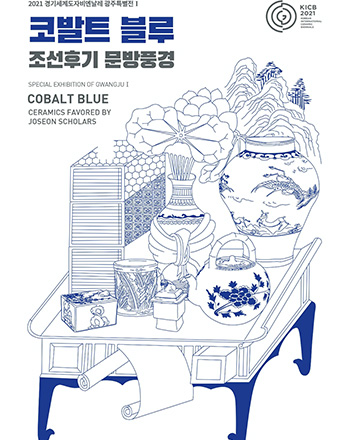
비엔날레 아카이브 컬렉션
청주공예비엔날레의 작가와 작품들
WORK OF ART
WORK OF ART-
안경알 땅빛 육각문 항아리 Sunme Lee
- 제작연도2020
- 사이즈44 X 44 X 55 (cm)
- 소재안경알, 동, 황동, 안경용 볼트, 너트
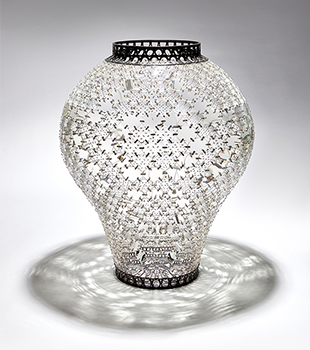
-
Memory Drop Youngho Park
- 제작연도2021
- 사이즈72 X 72 X 28 (cm)
- 소재붕규산유리 Borosilicate Glass
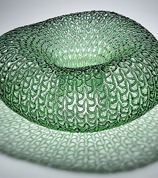
-
말총-빗살무늬 Dahye Jeong
- 제작연도2021
- 사이즈29 X 29 X 38 (cm)
- 소재말총 Horsehair
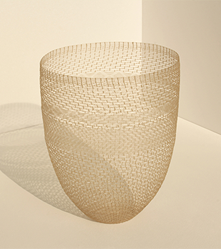
ARTIST
ARTIST-
홍근영 Geunyoung Hong작가 작품 보러가기add
나는 다수가 정해놓은 규칙과 배열, 그것을 수행해내야 하는 역할에 대해 주목한다.
그 과정에서의 분노, 위태롭고 불안하고 긴장된 공포의 순간을 입체와 드로잉으로 표현한다.
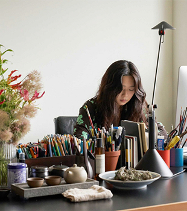
-
주세균 Sekyun Ju작가 작품 보러가기add
나는 사회적 규칙과 기준이 불완전하다고 생각하고, 사회적 구조 또한 일시적이고 유동적이라고 본다.
변하지 않을 것이라고 믿어지는 것에 시각적 변형과 왜곡을 주는 작업을 하고 있다.
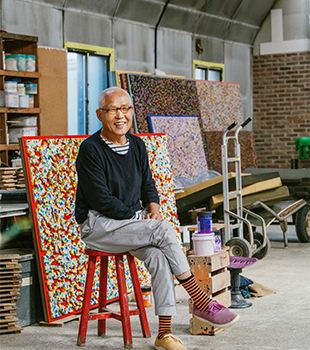
-
김태은 Tae-eun Kim작가 작품 보러가기add
살아가며 느낀 감정들을 하나하나 기록하는 행위는 나에게 명상과도 같다.
단어 하나하나를 적고 던져서 저만치 모인 글들은 내가 만들어 낸 회색빛 풍경이다.
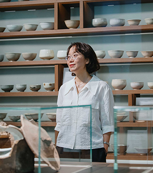
PUBLICATION
PUBLICATION-
경계 너머의 유토피아 Utopia Beyond the Borders
- 발행인김선정
- 편집인김선정
- 편집위원이택광
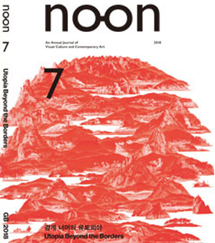
-
포스트 - 온라인 Post - Online
- 발행인박양우
- 편집인박양우
- 편집위원서동진, 강수미, 김성원, 김영호
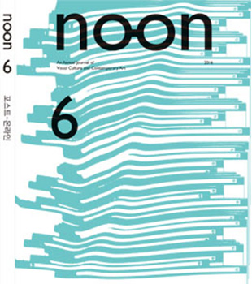
-
진리, 정보, 시각예술 사이 Rethinking Truth, Information and Visual Art
- 발행인강운
- 편집인이용우
- 편집위원김우창, 강수미, 김형중, 서동진
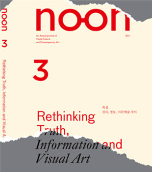
청주비엔날레 뉴스레터
비엔날레의 최신 소식을 만나보세요
-
천년의 숨결, 미래의 유산을 만날 청주전통공예페스티벌이 온다
9월 21일(수)~25일(일), 닷새간 문화제조창 본관 3층 청주시한국공예관 갤러리6에서 '2022 청주전통공예페스티벌' 개최 예정
2022.0830 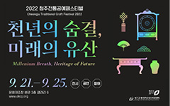
[천년의 숨결, 미래의 유산] 주제로 전시‧공연‧체험 등 전통공예의 미감 펼쳐
9월 13일부터 체험프로그램 ‘여기서-偕(해) 봐요’ 참여자 모집 진행 -
400일 앞으로 다가온 2023 청주공예비엔날레, 이번 초대국가 주빈국으로 ‘스페인’선정
비엔날레서 ‘스페인’ 초대는 처음... 스페인 공예 진흥원과 업무협약 체결
2022.0728 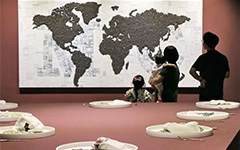
로에베 공예상 등 공예 분야의 높은 안목과 권위를 가진 정열의 나라 스페인 만날 기대에 분위기 고조
“화려함과 우아함, 자연주의와 장인정신 등 다양한 문화적 매력이 응축된 스페인을 주빈국으로 초대할 수 있게 돼 기쁘고 영광” -
2023 청주공예비엔날레 예술감독에 강재영 전 밀라노 한국공예전 감독
4일(월) 위촉식 진행, 국경과 장르를 자유로이 넘나드는 공예전시 기획 전문가
2022.0830 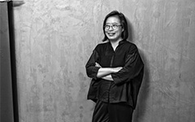
생명을 가진 모든 존재에 대한 올바른 태도와 윤리적 실천이 하나로 일치된 ‘공예’를 통해 인류 문명의 한 차원 성숙 도모
이달 중 조직위‧기획위원회와의 워크숍 통해 밑그림 본격화